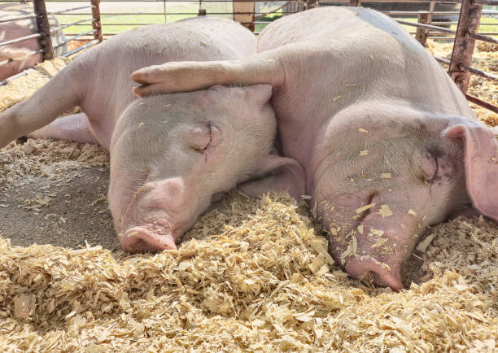
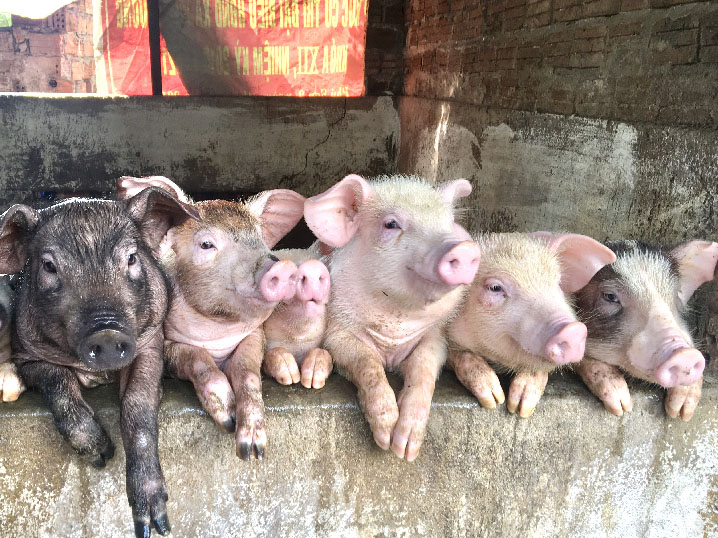
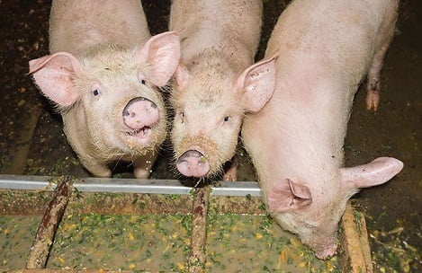
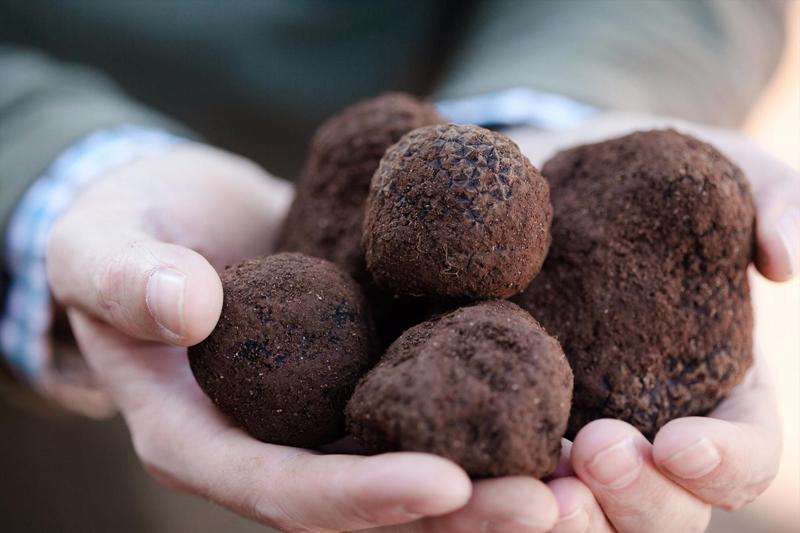

🐷 Heo – Loài Động Vật Thông Minh Hơn Bạn Nghĩ! 🧠✨
🧐 Heo Thực Sự Thông Minh Đến Mức Nào?
Nhiều nghiên cứu khoa học đã chứng minh rằng heo có trí thông minh vượt trội, thậm chí ngang ngửa với loài chó và có thể so sánh với trí tuệ của một đứa trẻ 3 tuổi! 🤯
✅Ghi nhớ tốt – Heo có thể nhận ra gương mặt của con người và ghi nhớ trong thời gian dài.
✅Giải quyết vấn đề – Chúng có thể tìm ra cách mở cửa chuồng hay vượt chướng ngại vật để lấy thức ăn.
✅Học hỏi nhanh – Heo có thể học các lệnh cơ bản, chơi game đơn giản trên màn hình cảm ứng và thậm chí nhận biết tên của mình.
🏡 Tập Tính Xã Hội Đặc Biệt Của Heo
Không giống như nhiều người nghĩ, heo không phải loài sống đơn độc mà rất thích kết bạn và sống theo nhóm. Chúng có thể nhớ mặt nhau, xây dựng mối quan hệ thân thiết và thậm chí có cảm xúc khi một con trong bầy bị mất đi. 💔🐖
Ngoài ra, heo cũng giao tiếp với nhau bằng hơn 20 loại âm thanh khác nhau để thể hiện cảm xúc và cảnh báo nguy hiểm. 🔊👂


🍽️ Heo Ăn Gì? Chế Độ Ăn Của Heo Có Gì Đặc Biệt?
Heo là loài ăn tạp, có thể ăn cả thực vật và động vật. Tuy nhiên, chúng có sở thích riêng:
🥕 Rau củ, trái cây – Dưa hấu, bí đỏ, cà rốt,...
🌾 Ngũ cốc – Ngô, lúa mì, yến mạch,...
🍖 Đạm động vật – Trứng, sữa, côn trùng,...

Heo có khứu giác cực kỳ nhạy bén và có thể đánh hơi tìm nấm truffle – một loại nấm đất đỏ bậc nhất thế giới! 🍄💰

🤔 Những Điều Thú Vị Khác Về Heo
💤 Heo ngáy khi ngủ – Giống hệt con người, heo cũng có giấc ngủ sâu và có thể ngáy rất to.
 🚿 Heo thích sạch sẽ – Dù bị hiểu lầm là ở bẩn, thực tế heo rất thích giữ vệ sinh, chúng chỉ lăn bùn để làm mát cơ thể.
🛶 Heo biết bơi! – Chúng có thể bơi giỏi hơn bạn nghĩ, thậm chí có một địa điểm du lịch nổi tiếng ở Bahamas gọi là "Pig Beach", nơi những chú heo bơi tung tăng trong nước biển xanh biếc.
🚿 Heo thích sạch sẽ – Dù bị hiểu lầm là ở bẩn, thực tế heo rất thích giữ vệ sinh, chúng chỉ lăn bùn để làm mát cơ thể.
🛶 Heo biết bơi! – Chúng có thể bơi giỏi hơn bạn nghĩ, thậm chí có một địa điểm du lịch nổi tiếng ở Bahamas gọi là "Pig Beach", nơi những chú heo bơi tung tăng trong nước biển xanh biếc.
🐖 Heo – Thông Minh Nhưng Cũng Khá "Béo" 🍔
Mặc dù có vẻ ngoài mập mạp, heo lại là một trong những loài động vật thông minh nhất. Chúng có thể học hỏi nhanh, giải quyết vấn đề và thậm chí ghi nhớ các lệnh đơn giản. Đừng để cái bụng to của chúng làm bạn lầm tưởng!